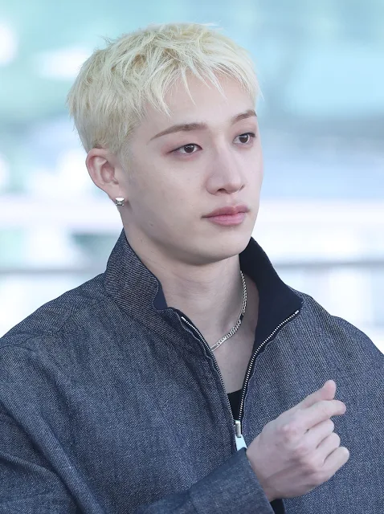
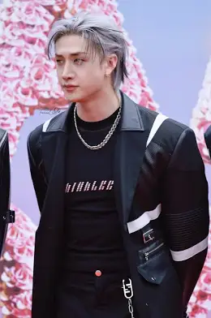
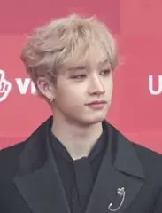

✦ BANG CHAN ✦
El Líder

★ PERFIL OFICIAL ★
Nombre artístico: Bang Chan (방찬)
Nombre real: Bahng Christopher Chahn
Apodo: Chan, Chris, Kangaroo
Fecha de nacimiento: 3 de octubre de 1997
Lugar de nacimiento: Seúl, Corea del Sur
Nacionalidad: Australiana / Coreana
Signo zodiacal: Libra ♎
Altura: 171 cm
Tipo de sangre: O
MBTI: ENFJ
Posición en SKZ: Líder, Productor, Vocalista, Bailarín, Rapper
Unidad: 3RACHA (como CB97)
Emoji representativo: 🐺 Lobo
Idiomas: Coreano, Inglés, Japonés, algo de Chino
Instagram: @gnabnahc
|
★ DATOS PERSONALES ★
Color favorito: Negro
Comida favorita: Carne de cordero, pineapple pizza, comida salada
Bebida favorita: Té verde de jazmín (¡no le gusta el café!)
Hobbies: Producción musical, gym, videojuegos
Música favorita: Hip-hop, EDM, pop, alternativo
Referentes: Drake, Bruno Mars
Deportes: Natación (rompió un récord escolar a los 8 años), salto largo y alto
Familia: Papá, mamá, hermana menor Hannah Bahng (también cantante), hermano menor Lucas
|
|
★ SU HISTORIA ★
Bang Chan nació en Seúl, pero creció en Sydney, Australia desde muy pequeño.
Asistió al Newtown High School of the Performing Arts, donde estudió ballet y danza contemporánea, y también era parte del coro escolar.
Estudió piano clásico desde los 5 años.
A los 13 años, pasó una audición local de JYP Entertainment en Australia y se mudó solo a Corea del Sur para perseguir su sueño.
Se unió a JYPE el 11 de abril de 2011, siendo el primero del futuro lineup de Stray Kids.
Entrenó durante 7 años, viendo cómo compañeros suyos debutaban en grupos como TWICE, GOT7 y DAY6, sin rendirse nunca.
En 2016, formó el trío hip-hop 3RACHA junto a Changbin y Han, publicando canciones propias en SoundCloud bajo el nombre "CB97".
En 2017, JYP lanzó el reality show de supervivencia "Stray Kids" y Bang Chan fue elegido como líder y productor del grupo.
Debutó oficialmente el 25 de marzo de 2018 con el mini-álbum "I Am NOT".
|
★ CURIOSIDADES ★
⭐ Habla inglés, coreano, japonés y algo de chino.
⭐ Tiene 208+ canciones registradas en KOMCA (2025).
⭐ Fue nombrado Embajador Global de Fendi en enero de 2025.
⭐ Es miembro pleno de la Asociación de Derechos de Autor de Música de Corea (KOMCA) desde 2023.
⭐ Tiene un programa semanal en vivo llamado "Chan's Room" donde conecta con los STAY.
⭐ Es conocido por sus hoyuelos profundos y su build atlético.
⭐ Le confía más a Felix entre los miembros.
⭐ Le gusta la pizza con piña.
⭐ No tiene carácter competitivo, prefiere la armonía del grupo.
⭐ Se le conoce por ser emocionalmente inteligente y cuidar mucho a sus miembros.
|
|
★ EN STRAY KIDS ★
Bang Chan es el corazón y la mente detrás de la identidad musical de Stray Kids.
Como líder, productor principal y parte de 3RACHA, él es responsable de gran parte del sonido único del grupo.
Su capacidad de componer, bailar, rapear y cantar lo convierte en un artista verdaderamente completo.
Es el portavoz del grupo en entrevistas internacionales y el que cuida a cada uno de sus miembros con dedicación.
"Stay happy, stay healthy, and don't forget that you're amazing just the way you are."
— Bang Chan
|


"You make Stray Kids stay."
← Volver al inicio
Realizado por Lisbeth Armijos ★ 2do "C"
|